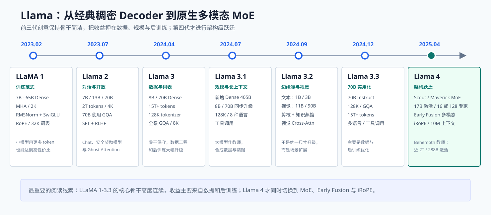
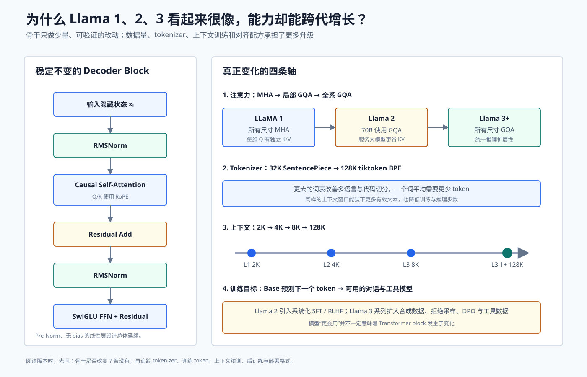
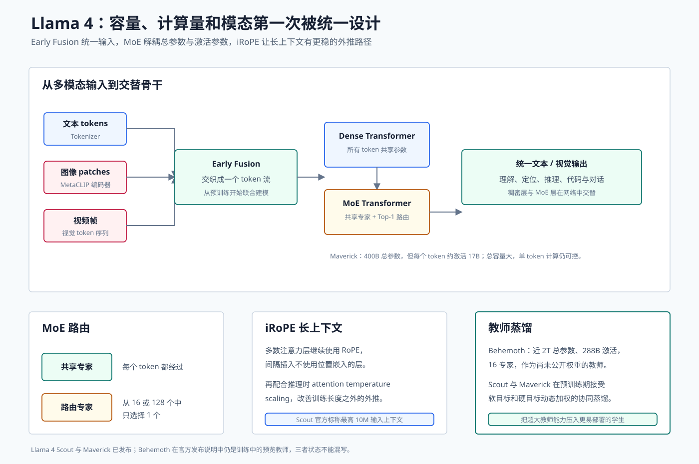

Llama 全系模型详解：从 LLaMA 1 到 Llama 4
Llama 系列对开源权重生态的影响，不只在于模型效果。它还提供了一条非常清晰的工程路线：
- LLaMA 1 证明“小一些的模型，只要多训练，也能有很强的推理性价比”；
- Llama 2 把 Base 模型扩展成系统化对齐的 Chat 模型；
- Llama 3 用 15T+ token、更大 tokenizer 和更强后训练继续挖掘 Dense Transformer；
- Llama 3.1 到 3.3 把上下文、尺寸、边缘端和视觉场景补齐；
- Llama 4 才第一次同时转向 MoE、原生多模态和新的长上下文位置设计。
本文覆盖 LLaMA 1 到 Llama 4，并将 Code Llama、Vision、Guard 等分支放回正确位置。内容以 2026 年 7 月 13 日前的论文、Meta 官方说明和官方模型卡为准。

图 1：Llama 1-3.3 的骨干高度连续；Llama 4 是第一次显著改变容量组织、模态融合和长上下文架构。
先澄清：开放权重不等于标准开源许可证
Llama 提供可下载权重、推理代码和模型卡，但各代使用 Meta 自定义社区许可证，带有可接受使用政策、规模或地域等条款。它通常被称为 open-weight，而不是 OSI 意义下不附加用途限制的开源软件。
技术学习与商业部署是两件事。部署前必须查看目标版本的 LICENSE，不能只根据“网上可下载”推断授权范围。
一张表建立版本坐标系
| 版本 | 发布时间 | 代表模型 | 数据与上下文 | 核心升级 |
|---|---|---|---|---|
| LLaMA 1 | 2023-02 | 7B、13B、33B、65B | 1T/1.4T，2K | RMSNorm、SwiGLU、RoPE 的经典 Dense 基线；长训练小模型 |
| Llama 2 | 2023-07 | 7B、13B、70B | 2T，4K | 70B GQA、SFT + RLHF、Chat、安全奖励模型 |
| Llama 3 | 2024-04 | 8B、70B | 15T+，8K | 128K tokenizer、全系 GQA、大规模数据与后训练 |
| Llama 3.1 | 2024-07 | 8B、70B、405B | 15T+，128K | 新增 405B Dense、8 种语言、工具调用、合成数据与蒸馏 |
| Llama 3.2 | 2024-09 | 文本 1B/3B；视觉 11B/90B | 文本最多 9T，128K | 端侧剪枝蒸馏；视觉编码器 + Cross-Attention adapter |
| Llama 3.3 | 2024-12 | 70B Instruct | 15T+，128K | 主要升级多语言、工具与后训练效率，骨干延续 3.x |
| Llama 4 Scout | 2025-04 | 109B 总参数，17B 激活，16 专家 | 30T+ 家族数据，最高 10M | MoE、Early Fusion、iRoPE，面向长上下文 |
| Llama 4 Maverick | 2025-04 | 400B 总参数，17B 激活，128 专家 | 30T+ 家族数据，1M | 更大总容量与原生多模态，Behemoth 蒸馏 |
| Llama 4 Behemoth | 预览教师 | 近 2T 总参数，288B 激活，16 专家 | 训练中预览 | 用作 Scout/Maverick 教师，官方未作为同状态权重发布 |
LLaMA 1：定义了后来两年的经典开源 LLM block
为什么强调“小模型多训练”
当时常见的 compute-optimal 讨论关注：给定训练预算，参数和 token 应如何配比。LLaMA 的目标更偏部署：即使训练阶段多花一些计算，只要最终模型更小，长期推理可能更便宜。
因此：
- 7B 在约 1T token 上训练；
- 13B、33B、65B 训练约 1.4T token；
- 65B 的公开数据训练模型可以接近当时更大参数模型的表现；
- 推理时只需承担 65B 而不是数百 B Dense 参数。
这不是违反扩展律，而是优化目标不同：Chinchilla 式分析常优化一次训练计算，LLaMA 更在意训练之后会被反复调用的推理成本。
一个 LLaMA block 的完整数据流
输入残差状态为 (x_l)：
它是 Pre-Norm：归一化位于子层之前，残差流保持直接梯度路径。
RMSNorm
LayerNorm 同时减均值、除标准差；RMSNorm 只按均方根缩放：
它少做均值中心化，计算简单，并在大模型中保持良好稳定性。
SwiGLU
传统 FFN 是两层线性 + 激活。SwiGLU 使用一条门控分支：
一条分支产生内容，一条分支决定哪些维度通过。为了在相近参数量下使用三矩阵结构，中间维度通常相对传统 4d FFN 做调整。
RoPE
RoPE 将 Query 与 Key 的二维分量按位置旋转。对第 (i) 对维度：
内积 ((R_mq)^T(R_nk)) 可表达相对位置 (n-m)。LLaMA 用它替代可学习绝对位置 embedding。更详细推导见位置编码基础。
第一代配置
第一代全部使用 MHA、32K SentencePiece BPE 词表和 2K 上下文。它主要是预训练 Base 模型，并没有像后来的 Llama 2-Chat 那样提供完整对齐报告。
Llama 2：骨干小改，Chat 对齐体系大改
Llama 2 把预训练数据提高到 2T token，上下文从 2K 扩到 4K，公开 7B、13B 与 70B。
70B 引入 GQA
7B、13B 继续使用 MHA；70B 使用 Grouped-Query Attention。多个 Query head 共享较少 K/V head：
生成时 KV Cache 大约从 MHA 的 (2n_qd_h) 降为 (2n_{kv}d_h) 个元素/层/token。70B 服务成本高，因此最先采用 GQA。可参考MHA、MQA 与 GQA。
Llama 2-Chat 的训练流水线
Llama 2 的影响力很大一部分来自公开讲清楚 Chat 模型如何训练。
第一步：SFT
使用约 27K 高质量人工指令数据建立基本对话格式。Meta 的经验是精而少的数据可能优于大量低质量模板。
第二步：分别训练 Helpfulness 与 Safety Reward Model
标注者比较同一 prompt 的两个回答，奖励模型学习偏好概率：
将 helpfulness 与 safety 分开，可以在冲突时使用专门策略，而不是把所有偏好压进一个难解释的分数。
第三步：Rejection Sampling 与 PPO
对同一 prompt 采样多个回答，用 reward model 选择较好样本继续 SFT；更大模型再用 PPO 直接优化期望回报，同时加 KL 约束避免策略偏离 Base/SFT 模型太远。
第四步：Ghost Attention
多轮对话中，模型容易忘掉最开始的 system instruction。Ghost Attention 把系统约束人工拼接进多轮训练数据的后续轮次，让模型学习长期遵循角色和规则；计算损失时又避免把这些“幽灵重复”当成真实用户可见文本。
这是一种训练数据技巧，不是新的 attention layer。
Code Llama 是分支，不是 Llama 2.1
Code Llama 基于 Llama 2 继续做代码训练，提供 7B、13B、34B、70B 等型号，并加入 Fill-in-the-Middle、Python 专项和最长上下文训练。
FIM 将文件拆成 prefix、suffix 和 middle，让模型学会根据上下文补中间代码。它改变训练样本排列与特殊 token，不改变核心 Transformer block。
Llama 3：最大升级发生在模型外部和训练流程
Llama 3 首批发布 8B 与 70B，骨干仍是 Dense decoder、RMSNorm、SwiGLU、RoPE 和 GQA。
全系使用 GQA
Llama 2 只有最大公开型号使用 GQA；Llama 3 的 8B 与 70B 都使用 GQA。统一结构让小模型在本地长对话中也能享受更低 KV Cache。
128K tiktoken 词表
词表从 32K SentencePiece 提高到约 128K tiktoken BPE。更大的多语言与代码词表带来：
- 常见词和代码片段被切成更少 token；
- 相同 8K 窗口能容纳更多有效字符；
- 序列变短后，训练与推理步数下降；
- embedding/output head 参数增加，需要在 token 效率与词表矩阵成本间平衡。
15T+ token 与数据工程
Llama 3 预训练数据超过 15T token，是 Llama 2 的七倍以上。团队使用启发式过滤、分类器、语义去重、质量模型和污染检测，并通过小规模 ablation 预测不同数据配比对代码、数学、知识和多语言的影响。
“数据更多”不是把网页全倒进去。若重复、机器生成垃圾和低质量 SEO 内容比例增加，更多 token 反而可能降低单位计算收益。
后训练
Llama 3 结合 SFT、rejection sampling、PPO/DPO 类偏好优化、合成数据与多轮质量控制。对话能力提升很大，但 block 结构并没有相同比例的变化。

图 2：Llama 1-3.3 的主干设计保持克制，注意力共享、tokenizer、上下文和后训练承担了大部分演进。
Llama 3.1：Dense 405B、128K 与工具调用
Llama 3.1 同步升级 8B、70B，并新增 405B。它仍是 Dense GQA 模型，不是 MoE。
为什么 405B 仍坚持 Dense
Dense 模型每个 token 都经过相同参数，路由与专家并行复杂度较低，训练信号也更均匀。代价是单 token 计算量与总参数量一起增长。
Meta 把 405B 作为：
- 高质量合成数据生成器；
- 8B/70B 的蒸馏教师；
- 评测、过滤和安全分类的上游模型；
- 开放生态中的超大 Dense 基线。
8K 到 128K
Llama 3.1 通过长上下文继续训练和数据课程把窗口扩到 128K。仅修改 RoPE scaling 配置不等于完整长上下文训练：模型还要见过长文档、跨段检索、长代码和多轮工具轨迹。
KV Cache 随 (L) 线性增长，prefill 的稠密注意力随 (L^2) 增长，所以 128K 的“可输入”与“低成本”仍是两回事。可阅读上下文窗口与 KV Cache。
多语言与工具
3.1 正式支持英语、德语、法语、意大利语、葡萄牙语、印地语、西班牙语和泰语，并使用结构化 chat template 表示工具定义、工具调用和工具结果。
训练系统
405B 在超过 16K 张 H100 上训练。团队选择 BF16 训练稳定性路径，并提供 FP8 推理方案；大量自动化检查用于发现 loss spike、硬件故障和数据异常。
Llama 3.2：一个版本号下有两条不同路线
Llama 3.2 不能用一句“新增视觉”概括，因为它同时发布：
- 文本 1B/3B：面向移动端和边缘设备；
- Vision 11B/90B：面向图像理解。
文本 1B/3B：剪枝 + 知识蒸馏
小模型并非完全从零开始。团队从更大的 Llama 3.1 模型剪枝得到较小结构，再用 8B/70B 的 logits 作为 token 级软目标恢复能力。
蒸馏目标可写成：
真实 token 的交叉熵保证正确监督；教师分布还告诉学生“次优 token 有多合理”，提供比 one-hot label 更丰富的暗知识。
文本模型最多使用约 9T token、支持 128K、全系 GQA，并共享输入输出 embedding 以节省参数。官方还提供面向 Arm/ExecuTorch 的 4-bit weight + 8-bit activation 量化、SpinQuant 与 QAT/LoRA 路径。
Vision 11B/90B：冻结语言能力，再接视觉路径
视觉模型以对应文本 LLM 为基础，加入 MetaCLIP 类视觉编码器和 Cross-Attention adapter layer。图像被切成 patch 并编码为视觉 token；文本隐藏状态在特定层通过 cross-attention 读取视觉 token：
训练初期保留/冻结更多文本模型能力，再训练视觉适配与跨模态数据，减少“学会看图却忘了说话”的灾难性遗忘。
这种结构仍然是语言骨干 + 视觉适配路径。Llama 4 的 Early Fusion 会从预训练起让视觉和文本进入统一主干，二者不能混为一谈。
Llama 3.3：用 70B 承接更大模型的实用能力
Llama 3.3 公开的主力是 70B Instruct，使用 GQA、128K、15T+ token，支持八种官方语言和工具调用。
它没有新增一种 attention 或 MoE。重点是更好的数据、合成样本、偏好对齐与多语言，使 70B 在多项任务上接近此前 405B Instruct，同时显著降低服务成本。
因此 3.3 是一个典型“权重与训练配方版本”：
- 架构配置接近 3.1 70B；
- Base/预训练创新不是发布重点；
- 用户得到的是更成熟、部署成本更合理的 Instruct 模型。
Llama 4：第一次转向原生多模态 MoE
Llama 4 已发布 Scout 与 Maverick，并预览 Behemoth 教师。它不再只是 Llama 3 的数据升级。
MoE：总容量与单 token 计算解耦
Maverick 有约 400B 总参数、17B 激活参数、128 个路由专家；Scout 约 109B 总参数、17B 激活、16 个专家。
Llama 4 在 Dense layer 与 MoE layer 之间交替。MoE 层中，每个 token 都经过共享专家，再从路由专家中 Top-1 选择一个：
Top-1 路由让激活计算较低，但所有专家权重仍需放在单机或分布式设备上。完整 MoE 原理见Mixture of Experts 详解。
Early Fusion：文本与视觉从预训练开始共用骨干
Llama 4 使用基于 MetaCLIP 的视觉编码器，把图像和视频帧变成 token，与文本 token 早期融合进统一 Transformer。
与 Llama 3.2 Vision 相比：
| 对比 | Llama 3.2 Vision | Llama 4 |
|---|---|---|
| 语言骨干 | 先有成熟文本模型 | 从预训练阶段联合设计 |
| 视觉交互 | Cross-Attention adapter | Early Fusion 统一 token 流 |
| 训练数据 | 重点训练适配与跨模态阶段 | 大规模文本、图像、视频联合预训练 |
| 目标 | 给语言模型增加看图能力 | 建立原生多模态基础模型 |

图 3：Llama 4 把多模态输入、稀疏专家、长上下文和教师蒸馏放进同一系统。
iRoPE：位置层与 NoPE 层交错
传统 RoPE 在超长位置上会遇到未见过的旋转相位。Llama 4 的 iRoPE 在网络中交错：
- 多数 attention layer 使用 RoPE；
- 部分 layer 不使用显式位置 embedding，即 NoPE；
- 推理时对 attention 使用 temperature scaling，改善长度外推。
RoPE 层提供局部顺序与相对位置信息，NoPE 层减少模型对特定训练长度位置相位的过拟合。Scout 在中期训练中扩展长上下文，官方标称最高 10M 输入；Maverick 标称 1M。
注意：10M 是支持上限，不表示任意 10M token 任务都能无损定位，也不表示普通单机能低成本完成 prefill。
MetaP：让小模型实验能预测大模型超参数
模型宽度、深度、batch 和训练 token 改变时，最佳学习率、初始化尺度和层间缩放往往一起变化。MetaP 的目标是找到可跨规模迁移的参数化与超参数规则，让小规模实验更可靠地指导大规模训练。
这与扩展律互补：扩展律预测损失与预算，MetaP 更关注“同一训练配方如何随模型形状缩放而保持稳定”。
30T+ token、FP8 与 Mid-Training
Llama 4 家族使用超过 30T 的文本、图像和视频 token，覆盖 200 种语言，其中 100 多种拥有十亿级 token；多语言 token 总量约为 Llama 3 的十倍。
Behemoth 在 32K GPU 上使用 FP8 训练。基础预训练后还有 mid-training：加入长上下文与能力密集数据，在正式后训练前改变能力分布。
Behemoth 教师蒸馏
Behemoth 接近 2T 总参数、288B 激活、16 专家。在官方 Llama 4 发布说明中它仍是训练中的预览教师，不应与已发布权重的 Scout/Maverick 并列成相同可用状态。
Maverick 等学生在预训练中接受 Behemoth 的协同蒸馏。蒸馏损失动态组合：
- hard target：真实下一个 token；
- soft target：教师对整个词表的概率分布。
这样可以把巨型教师对“哪些错误也相对合理”的判断传给更易部署的学生。
后训练：轻 SFT → 在线 RL → 轻 DPO
Meta 在 Llama 4 中减少容易 SFT 样本，先用较少高难数据建立格式，再进行大规模在线 RL，让模型有探索空间，最后用轻量 DPO 修正对话质量与边角行为。
流程可写成：
训练中会过滤 reward advantage 为零的 prompt，并根据当前策略的 pass@k 动态选择中高难样本。这与固定离线偏好集相比，更贴近模型当前能力边界。
Code、Vision、Guard 等分支如何归类
| 名称 | 所属层次 | 主要目的 |
|---|---|---|
| Code Llama | Llama 2 代码续训分支 | FIM、代码生成、Python 与长代码 |
| Llama 3.2 Vision | Llama 3.x 视觉分支 | 视觉编码器 + Cross-Attention adapter |
| Llama Guard | 安全分类模型 | 对输入/输出进行风险类别判断 |
| Prompt Guard | 系统防护模型 | 检测 prompt injection 与越狱 |
| Llama 4 Scout/Maverick | 第四代主线 | 原生多模态 MoE |
“同属 Llama 生态”不代表它们可以互换 checkpoint，也不代表参数结构相同。
三代稠密骨干为什么能持续进步
把 Llama 1 到 3.3 放在一起，会看到一个重要事实：模型能力不是架构创新的单变量函数。
数据规模与质量
数据量扩大同时伴随过滤、去重、专业领域配比和合成数据改进。
Tokenizer
32K 词表升级到 128K，直接改变多语言和代码的有效序列长度。
推理效率
MHA 逐步变为全系 GQA，降低 KV Cache，让更长上下文和更高 batch 更可行。
后训练
从 Base-only 研究权重，发展为 SFT、双 reward model、rejection sampling、PPO/DPO、合成数据、工具和在线 RL。
因此“模型表现变好但 block 没怎么改”不是矛盾。Transformer 只是学习器，数据与目标函数决定它被训练成什么。
Llama、DeepSeek、Qwen 的路线差异
| 维度 | Llama | DeepSeek | Qwen |
|---|---|---|---|
| 早期主线 | 简洁 Dense、数据扩展 | Dense 基线后快速转 MLA + MoE | Dense、多语言、工具生态 |
| KV 优化 | GQA | MLA latent cache | GQA，后转混合线性注意力 |
| MoE 进入主线 | Llama 4 | DeepSeek-V2 | Qwen2 已有主力 MoE，Qwen3-Next 高稀疏化 |
| 超长上下文 | RoPE 续训、iRoPE | DSA、CSA/HCA | DCA/YaRN、Gated DeltaNet 混合骨干 |
| 多模态 | 3.2 adapter，4 Early Fusion | V1-V4 主报告以语言为主 | 3.5 Early Fusion 原生多模态 |
这张表不是性能排名，而是架构选择的差异。
初学者最容易犯的八个错误
- 把 LLaMA 1 当成 Chat 模型。第一代重点是 Base 预训练；系统化 Chat/RLHF 从 Llama 2 展开。
- 认为 Llama 2 全系 GQA。公开 7B/13B 用 MHA，70B 用 GQA。
- 认为 Llama 3 发明了新 attention。它主要是全系 GQA、更大 tokenizer、数据和后训练。
- 把 Llama 3.1 405B 当成 MoE。它是 Dense 模型，每个 token 都使用全部主干参数。
- 把 3.2 文本和 Vision 当成同一结构。1B/3B 是边缘文本模型；11B/90B 加了视觉路径。
- 把 3.3 当成新骨干。它主要是 70B Instruct 的数据与后训练升级。
- 看到 Llama 4 的 17B 激活就按 17B 权重部署。Scout/Maverick 仍分别有约 109B/400B 总权重。
- 把 Behemoth 当成已经同状态发布。官方把它描述为仍在训练的预览教师。
如何按需求选版本
| 需求 | 建议关注 | 原因 |
|---|---|---|
| 学习经典 decoder-only Transformer | LLaMA 1 | 结构简洁，RMSNorm/SwiGLU/RoPE 定义清楚 |
| 学习 RLHF 与 Chat 对齐 | Llama 2 | 技术报告对 reward model、PPO 和安全流程最完整 |
| 成熟通用文本与工具生态 | Llama 3.1/3.3 | 128K、GQA、工具模板、框架支持广 |
| 手机与边缘端 | Llama 3.2 1B/3B | 剪枝蒸馏、量化和 ExecuTorch 路径 |
| 视觉问答但希望保留 3.x 语言骨干 | Llama 3.2 Vision | Cross-Attention adapter 结构清晰 |
| 原生多模态与超长上下文 | Llama 4 Scout | Early Fusion、MoE、最高 10M |
| 更大多模态容量 | Llama 4 Maverick | 400B 总参数、128 路由专家、17B 激活 |
学完后的自测题
- LLaMA 为什么愿意让 7B/13B 训练更多 token，而不是只追求一次训练最省算力？
- RMSNorm 与 LayerNorm 的计算差别是什么？
- Llama 2 的 Ghost Attention 为什么不是一种 attention layer？
- Llama 3 的 128K tokenizer 如何间接降低注意力成本？
- Llama 3.1 405B 为什么适合做合成数据教师，但部署成本高？
- Llama 3.2 文本小模型的剪枝与知识蒸馏分别做什么？
- Llama 3.2 Vision 的 Cross-Attention 与 Llama 4 Early Fusion 有什么区别？
- Llama 4 的共享专家 + Top-1 路由怎样解耦总参数与激活参数？
- iRoPE 为什么要交错 RoPE 与 NoPE layer？
能完整回答这些问题，就已经掌握 Llama 四代的关键版本边界和技术逻辑。
官方资料
- LLaMA: Open and Efficient Foundation Language Models
- Llama 2: Open Foundation and Fine-Tuned Chat Models
- Code Llama: Open Foundation Models for Code
- The Llama 3 Herd of Models
- Llama 3.1 官方发布说明
- Llama 3.2 文本模型官方模型卡
- Llama 3.2 Vision 官方模型卡
- Llama 3.3 官方模型卡
- Llama 4 官方发布说明
- Meta Llama 官方模型仓库与版本表
总结
Llama 的前三代说明了一个经常被低估的事实：架构保持稳定，不妨碍能力持续跨越。更大的高质量数据、更高效的 tokenizer、GQA、长上下文训练、合成数据和系统化后训练，足以让同类 Dense block 连续升级。
Llama 4 则改变了问题本身：用 MoE 扩大容量但控制激活计算，用 Early Fusion 统一文本与视觉，用 iRoPE 和 mid-training 推进超长上下文，再用近 2T 教师把能力蒸馏进 Scout 与 Maverick。理解这条路线后，看到任何新 Llama 型号，都可以先判断它究竟改变了骨干、数据、上下文、后训练，还是仅仅改变了部署形态。